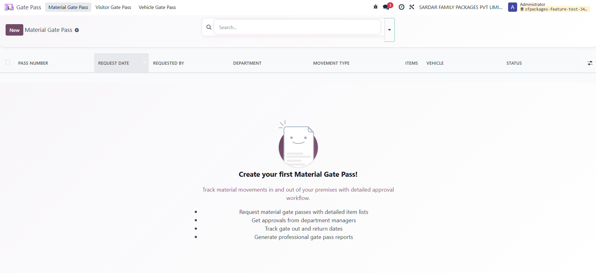
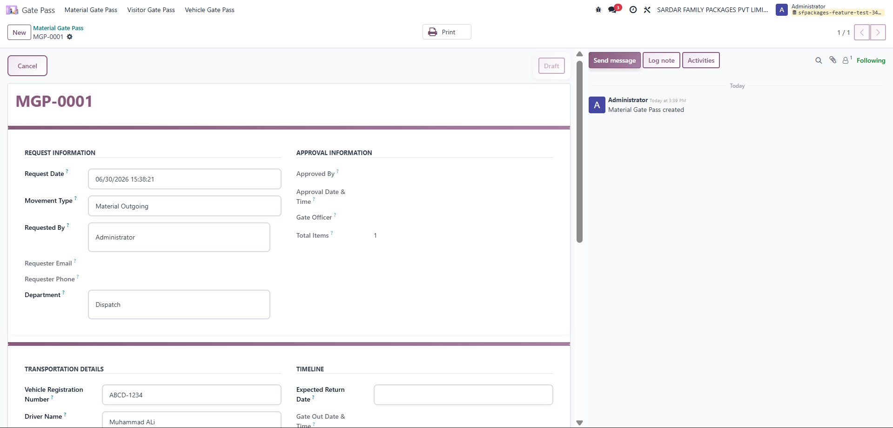
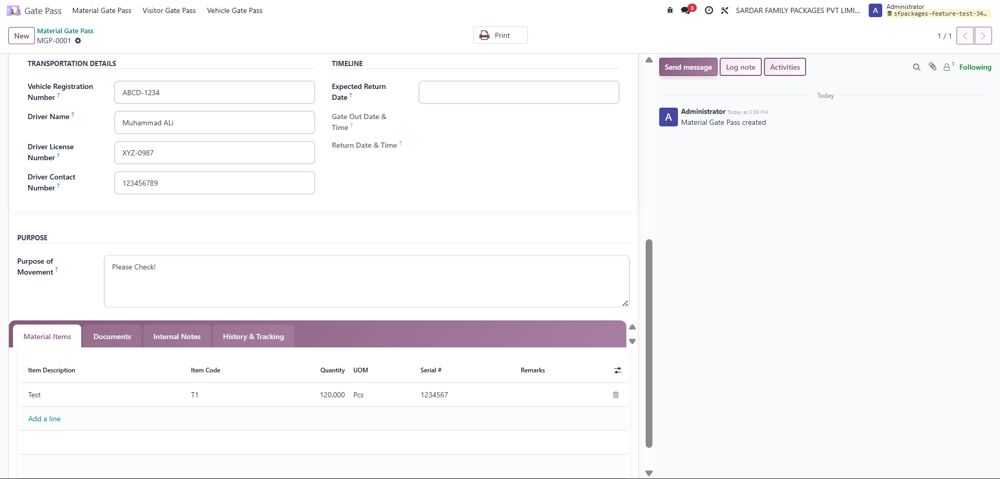
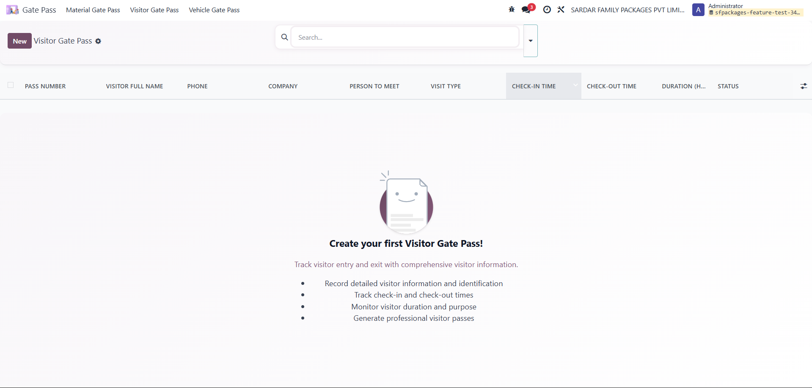
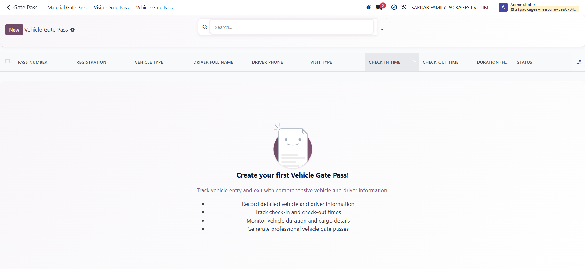

A complete gate pass solution for factories, offices, and industrial sites. Track material movements with approval workflows, manage visitor check-in/out, and monitor vehicle access — all from a dedicated Odoo application.
Manage material movements with item lines, movement types, manager approval, gate out & return tracking, and status-based list views.

Create gate pass requests with department approval, transportation details, and detailed material item lines — all tracked with mail chatter.


Register visitors with ID details, person to meet, check-in/check-out, duration tracking, and visitor badge assignment.

Track vehicle registration, driver information, cargo description, visit type, and on-premises duration.

Item lines, movement types (out/in/return/transfer), manager approval, gate out & return tracking, and professional PDF reports.
Visitor details, ID types, person to meet, check-in/check-out, duration calculation, and visitor badge assignment.
Vehicle & driver information, cargo description, visit type, and on-premises duration tracking.
After installation, assign users to the appropriate Gate Pass security groups under Settings → Users → Access Rights. The Gate Pass app appears on the home screen for authorized users.
Published by Prissol Private Limited
Website: https://prissol.com
Email: hello@prissol.com